Mažų
duomenų sandėliavimas
lekt. Šarūnas Kasnauskas, 2018
Duomenų sandėlis (Data warehouse - DWH)
Duomenų sandėlis, tai istorinių duomenų, surinktų ir sugrupuotų pagal tam tikrą tematiką, saugykla prieinama analitinio apdorojimo veikloms

Ištrauk, transformuok, įdėk (Extract, Transform and Load - ETL)
ETL, tai procesas leidžiantis ištraukti duomenis iš duomenų šaltinių, juos išvalyti bei transformuoti ir užkrauti į kitas duomenų bazes

Motyvacija
Verslo problemos
Renkame krūvas duomenų, bet jų napasiekiame
Norime dalinti, pjaustyti duomenis visokiais būdais
Verslo žmonėms reikalinga paprasta duomenų prieiga
Ištisus susirinkimus praleidžaime besiginčydami, kas turi teisingus skaičius vietoj to, kad priimtume sprendimus
Norime, kad žmonės naudotų faktinę informaciją paremdami savo sprendimus
Verslo reikalavimai
- Duomenų sandėliavimo sistema turi informaciją padaryti lengvai pasiekiamą
- Duomenų sandėliavimo sistema turi prisitaikyti prie pokyčių
- Duomenų sandėliavimo sistema turi apsaugoti informacijos išteklius
- Verslas turi priimti duomenų sandeliavimo sistemą norint ją laikyti sėkminga
Duomenų sandėlis prieš duomenų bazę
OLTP - On-line transaction processing
Daug, trumpų užklausų - INSERT, UPDATE, DELETE
OLAP - On-line analytical processing
Lėtos, masyvios užklausos - SELECT

Normalicija
Duomenų transformacija į natūraliai sugrupuotą ir gerai suformuotą formą taip, kad vienas faktas būtų vienoje vietoje ir ryšiai tarp faktų būtų tvarkingi
Denormalizacija
Strategija naudojama anksčiau normalizuotų duomenų bazių nuskaitymo greitaveikai pagerinti
| OLTP | OLAP |
|---|---|
| Dabartiniai duomenys | Dabartiniai ir istoriniai duomenys |
| Trumpos užklausų vykdymo transakcijos | Ilgos užklausų vykdymo transakcijos |
| On-line update/insert/delete komandos | Foninės update/insert/delete komandos |
| DB normalizacija skatintina | DB denormalizacija skatintina |
| Dideli užklausų kiekiai | Maži užklausų kiekiai |
| Transakcijos atstatymas yra būtinas | Transakcijos atstatymas nėra būtinas |
| Mažai indeksų | Daug indeksų |
| Daug sąryšių | Nedaug sąryšių |
Duomenų sandėlio kūrimas
Bill Inmon prieš Ralph Kimball
vsDu pagrindiniai modeliai
Inmon - iš viršaus į apačią (Top-down)
Kimball - iš apačios į viršų (Bottom-up)


| Inmon | Kimball | |
|---|---|---|
| Poreikis | Ilgesnis laikotarpis | Nedelsiant |
| Varomoji jėga | Įmonė | Departamentai |
| Biudžetas | Didelis | Mažas |
| Reikalavimai | Stabilūs | Besikeičiantys |
| Duomenų šaltiniai | Besikeičiantys | Stabilūs |
| Pradiniai kaštai | Didesni | Mažesni |
Dimensinis modeliavimas
Faktų lentelės
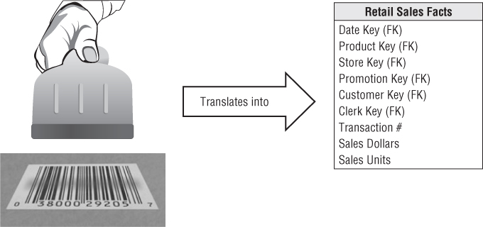Faktų lentelės
- Kiekviena eilutė - vienas pamatavimo įvykis
- Kiekviena eilutė tam tikro vienodo detalumo lygio
- Dažniausiai, išorinių raktų ir skaitinių reikšmių aibė
- Didelis įrašų (eilučių) kiekis
Dimensijų lentelės
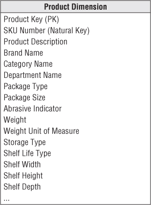Dimensijų lentelės
- Suteikia kontekstą faktų lentelėms (Kas? Kur? Kada? Kaip? Kodėl?)
- Paprastai didelis stulpelių (atributų) kiekis
- Konkretus pirminis raktas kiekvienai dimensijai
- Dažniausiai mažas eilučių kiekis
Lėtai besikeičiančios dimenijos (Slowly changing dimensions)
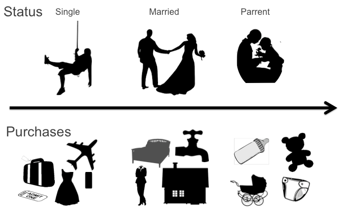SCD tipai
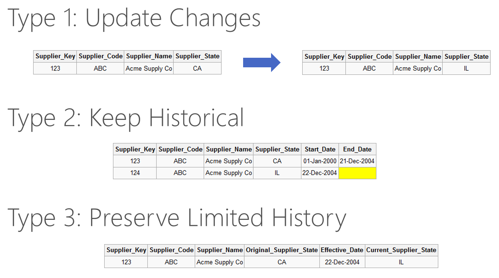Duomenų sandėlio schemos
Žvaigždės schema (Star schema)
Snaigės schema (Snowflake schema)
Žvaigždyno schema (Galaxy schema)
Žvaigždės schema
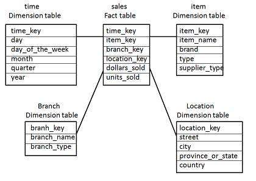Žvaigždės schemos ypatybės
- Kiekviena dimensija atvaizduojama tik vienoje lentelėje
- Dimensijų lentelėje talpinami atributai
- Dimensijos lentelę su faktų lentele jungia išorinis raktas
- Dimensijų lentelės nesujungtos tarpusavyje
- Dimensijų lentelės nėra normalizuotos
Snaigės schema
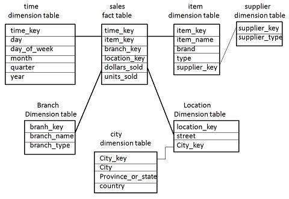Snaigės schemos ypatybės
- Naudojama hierarchinė stuktūra bei normalizuotos lentelės
- Mažesnis kietojo disko vietos naudojimas
- Lengviau įgyvendinti dimensijų schemos pakeitimus
- Dėl didesnio lentelių kiekio prastesnė užklausų greitaveika
Žvaigždyno schema
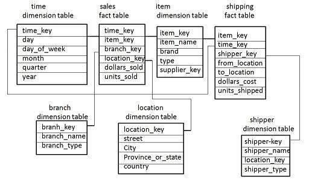Žvaigždyno schemos ypatybės
- Galimos kelios faktų lentelės
- Daug komplikuotesnis schemos architektūrinis dizainas
- Dimensijos gali jungtis su keliomis faktų lentelėmis
- Kai kurie verslo analitikos įrankiai gali nepalaikyti tokios schemos
Multidimensinis duomenų kubas (OLAP cube)
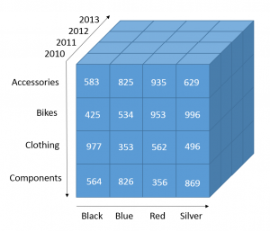Duomenų kubas
Tai multidimensinė lentelė - dimensijų ir faktų lentelių junginys
Duomenų kubai kuriami ant minėtų schemų siekiant pagerinti užklausų greitaveiką - agregavimų, sumavimų skaičiavimus
Duomenų kubo operacijos
- Paversti - Pivot
- Eiti gylyn - Drill-down
- Eiti į viršų - Roll-up
- Padalinti - Slice
- Projektuoti - Dice
Įrankiai
ETL įrankiai
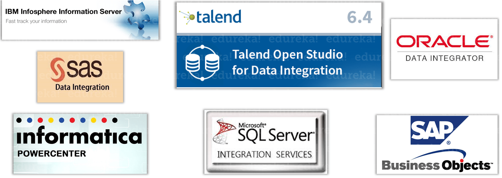ETL pavyzdys
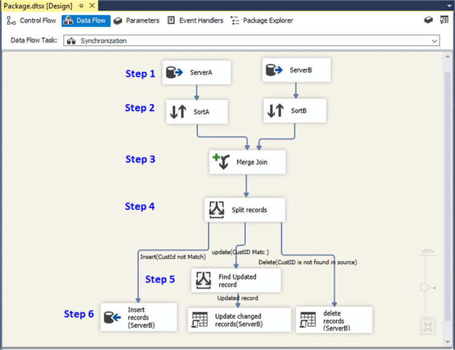Kubų įrankiai
- Oracle Hyperion Essbase
- Teradata OLAP
- Microsoft Analysis Services (SSAS)
- SAP NetWeaver Business Warehouse
- Microsoft Power Pivot
Kubų kūrimo pavyzdys
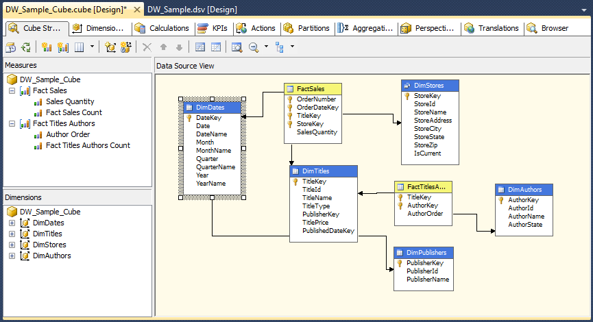Struktūruoti maži
duomenys?
Duomenų sandėliai ✔
Nestruktūruoti, pusiau struktūruoti, dideli duomenys?